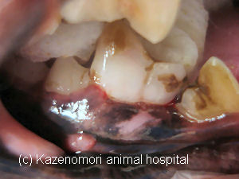

** Topic 201１年 １２月**

●歯根の病巣
当院にて、犬の歯科疾患で来院される最も多い原因は、歯周病です。
歯周病の場合、口臭が出て、歯石や歯垢の付着が目立って見えるようになってくることが多く、そのため、飼い主さんも気にされることが多いようですね。
しかし、歯周病と同じ歯を支持する歯周組織の病気でも、少々気付きづらい形で症状がみられることがあります。
下は、トイプードルの患者さんの右下の第１後臼歯の写真です。
一見、歯牙自体は、少々の歯石の付着がみられるだけのように見えますが、歯肉の下に小さな膨らみがみられます。これが、歯根（根尖）の感染を示すサインになります。歯牙を見直すと、他の歯に比べて、透明度が低く若干赤みがかっているのがわかります。この歯牙は、レントゲン検査にて、歯根を支える歯槽骨が炎症により吸収されているのが、確認されたため、抜歯を行いました。
この歯の、歯髄は壊死し、変色していました。
歯の健康は、歯を支える歯周組織も含めての診査が大変重要です。
歯の検診、ぜひ定期的に受けるようおすすめします。